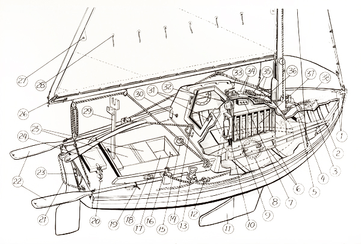

"TINKERBELLE"

Tinkerbelle
and Her Fittings
Chocks for mooring lines
Half-inch
dacron
line wrapped around mast, with swivel shackle at forward end for attaching sea-anchor line
Mooring cleat
Red and green combination running light
Case for six-volt battery powering all lights
Fixture to facilitate tying down supplies securely
Switches to control running light, stern light and masthead light
Porthole with 3/8-inch plastic cover to prevent breakage by waves
Barometer
Fire extinguisher
Lowered
daggerboard
-keel
Jam cleat for sheet used with small jib
Bilge pump
Handhold
Bridge-deck compass
Bronze strap for attaching lifeline
Self-bailing cockpit foot well
Oarlock
Second part of oarlock
Stern light
Safety line attaching rudder to boat
Oars used for rowing or to wing out twin genoas for self-steering with following wind
Oarlock fixture at stern
Lazarette
hatch
Removable "box" designed to reduce size of cockpit foot well; flotation material in aft portion and storage space under hinged lid in forward position
Swivel at end of boom to which topping lift is attached
Reefing cringle
Reef point
Boom and mast crutch
Waterproof electrical socket for attaching cover
Fixtures for securing cabin hatch cover
Cabin dome light
Winch and line for raising
daggerboard
-keel
Fixture on which rod that holds
daggerboard
-keel in raised position rests
Cleats for jib and mainsheet halyards
Slot through which
daggerboard
-keel is raised or lowered
Rack for charts and other papers
Raised rub rail providing handhold for anyone in water
TABLE OF CONTENTS
|
EQUIPMENT AND SUPPLIES